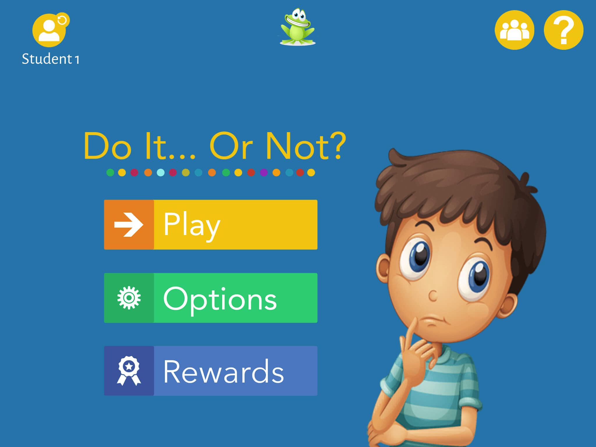
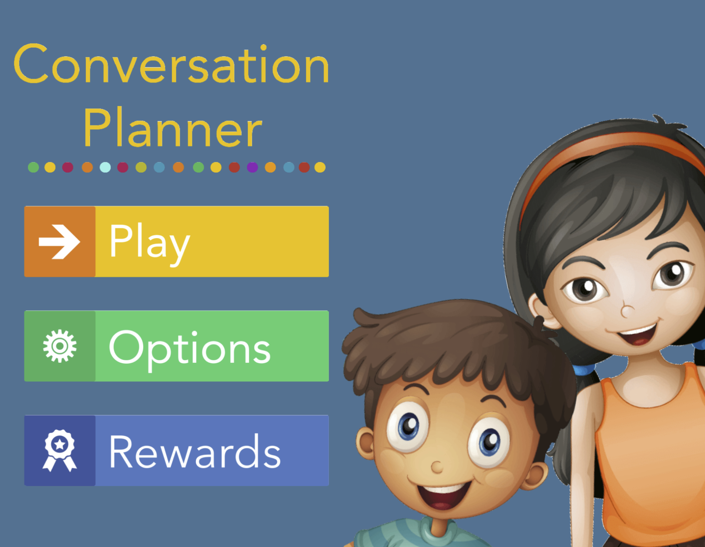
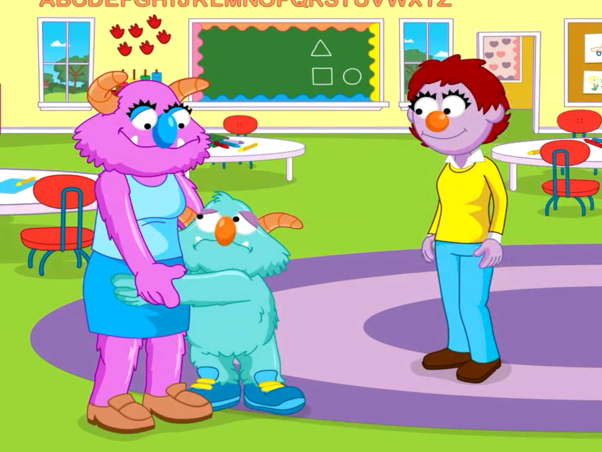

Socially Savvy Apps
Socially Savvy Apps finds iPad apps that teach social skills to children and teenagers on the autism spectrum.
These apps include social stories, social games and even practice with skills such as face expression recognition.
Research suggests that children and teenagers on the autism spectrum can be highly motivated by interventions delivered with an iPad.
If you have a child or teenager on the autism spectrum, and you struggle to keep them motivated while explaining social rules and behaviours to them, you could consider iPad apps as a learning support.
Socially Savvy Apps brings all these apps to one place, so that you can easily find the right ones for your child or teenager.

Do It... Or Not is the companion app for Say it... Or Not? from Happy Frog Apps, and it revolves around the only thing that speaks louder than words. Do It... Or Not helps children with autism recognise and decide what is ok to do (and what is not) in social situations. It covers over 100 social situations, and shares the same easy to use and child friendly interface with the other two social skills apps from this developer: Say it... Or Not? and Conversation Planner. The levels in Do It... Or Not revolve around family, school & friends, and the community. Your child will encounter three types of questions: inferring how others feel about their actions (Feelings), determining whether something is ok to do or not (Do it or not?), and choosing an appropriate action to take in specific social situations (What to do?). The downside is that the questions might not match your child’s previous knowledge about a situation. If they forget to do their homework and offer to do it quickly just before they are due to leave for school, mom may not be ‘willing to help’, as Do It... Or Not, but may rather get annoyed (marked as an incorrect answer). This can be avoided by playing the game in the Adult Support mode, in which no pre-set answers are shown – your child comes up with their own answers, and you get to decide if their assessment of your hypothetical reaction is correct or not. What particularly stands out about Do It... Or Not is that in the ‘What to do?’ levels, the correct responses promote constructive behaviours (e.g. trying to find an alternative solution to their problem, such as saving up for a video game) over those unlikely to produce the desired result (e.g. complaining that they don’t have the game).
Say it... Or Not? helps children learn what is appropriate to say (or not) in over 100 real-life social situations involving family, friends and the wider community, across 12 levels of difficulty. The user needs to demonstrate mastery of each level before progressing to the next one. The app's interface, as well as the strong focus on taking others’ perspective, is very similar to Conversation Planner from the same developer. The three most important shared features are: game-play mode (independent or with adult support), tracking up to 10 users’ learning, and the Reward Center, which the user can access with coins received for correct responses. The main difference between the apps are the questions and how the levels progress. In Say it... Or Not?, the levels revolve around family, friends, and the wider community. There are three types of questions: inferring other's feelings, determining whether something is ok to say or not, and giving an appropriate response (i.e. something 'ok to say') to a situation.

Conversation Planner helps children and teenagers prepare for conversations across a wide array of social situations. Over 130 scenarios are presented in a question and answer format, covering key components of a conversation such as knowing when someone is ready to talk to you, when a conversation should be kept short or when a longer conversation one is appropriate, how to start and end a conversation, and how to react when a conversation does not go the way you expect it to. The player progresses through the conversation components in this order, being allowed to progress only once they master the current skill. As the child masters more conversation components, they access ”Conversation Planner” levels, where they revise everything they learned up to that point. Conversation Planner can be used either independently, with the child choosing the correct answer out of three alternatives, or with adult support – with the child giving the answer orally and the adult marking it as correct or not. Ideally, an adult should use the app with the child even in the Independent mode, in order to clarify why the child’s answers are correct or not. Each three correct answers earn the player a coin, which they can spend in the app’s “Reward Center”, consisting of two minigames. This gives the player an incentive to learn all conversation components. A nice feature of Conversation Planner is that you can track your child’s learning, and if they have siblings or friends you’d also like to give the app to, up to 10 player profiles can be created.

Breathe, Think, Do from Sesame Street teaches children how to deal with life’s challenges by managing their emotions and developing plans to solve these challenges. Children help the monster manage his emotions (frustration, sadness, disappointment, being impatient and anxiety) and then come up with and choose a solution for the five challenges he encounters: not being able to tie his shoes, not wanting to say goodbye to mommy at school, dealing with the fall of a tall block tower he built, waiting in line to go down the slide and getting ready to turn off the lights for bedtime. For each challenge, the monster uses a belly-breathing technique to calm down (breathe), after which he makes three plans for coping with the challenge (think). Then the child chooses one of these plans to implement (do). Don’t skip the parents section of Breathe, Think, Do, as it has excellent content! What stand out in particular are the tips and strategies for helping children be persistent, cope with separation, practice patience, overcome mistakes, build confidence and communication skills, be independent, express their emotions in positive ways without resorting to mean or aggressive behaviour, deal with sibling rivalry and adjusting to a move. There is also a ‘breathe with the monster’ animation that your child can practice with, as well as the option to personalise the app with your child's (or your own) voice, instead of the narrator’s. Breathe, Think, Do can be used in two languages: either English or Spanish.

In The Social Express II, Emma, Zack and their friends embark on a search for the “hidden social keys”. The player follows the children through social scenarios of varied complexity, and gets to choose how the children behave in these situations. “Video modelling on steroids”, as its developers call it, The Social Express II is beautifully animated and covers a wide array of social scenarios. The players can see each social scenario in three ways: either as an interactive video, with the player’s choices affecting the outcome, as a normal video which features only the correct choices, and in book form.

10 Ways - A Social Skills Game is a Jeopardy-style app that helps children improve their social skills. Under the coaching of an adult, children compete against one another by answering questions and completing tasks related to social situations and social communication. Despite its competitive format, 10 Ways strongly encourages cooperation and group work. There are direct prompts, in the form of questions that require the child to get help from another player. The most notable feature of this app is the open-ended nature of most questions, and their potential to spark debates between participating children and adults.

By using the story of Kloog, an extraterrestrial that finds himself stranded on Earth, Social Skills for Autism teaches social rules to children and adolescents on the spectrum. Rather than listing social rules, Social Skills for Autism also takes the time to explain why certain behaviours are more appropriate than others. The player helps Kloog learn social rules via “missions”, each targeting a social skill domain: non-verbal communication, conversation skills and what the developers call “think before you talk”, containing lessons on how to disagree in a nice way, what honesty means, and also why social rules are important. Kloog's adventures continue in Return to Zugopolis

Let’s Be Social contains 20 short social stories, spanning six sets of social skills: personal interactions, navigating the community, school behaviour, handling change and social relationships. After reading or being read each story, the user is prompted to answer a series of questions. These questions test the user’s understanding of the terms used in the social story, and of the appropriateness of the behaviours and emotions depicted in it. After answering all the questions, the user is told the story again, and is rewarded with golden stars.